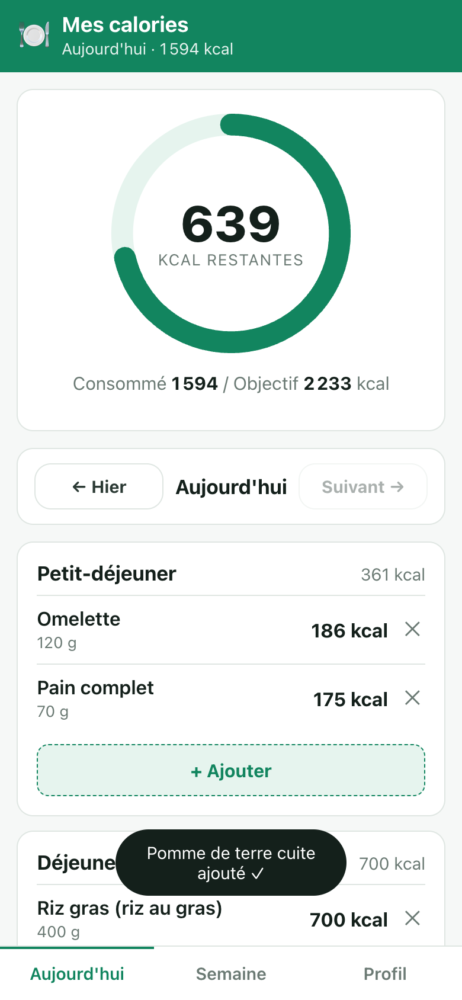
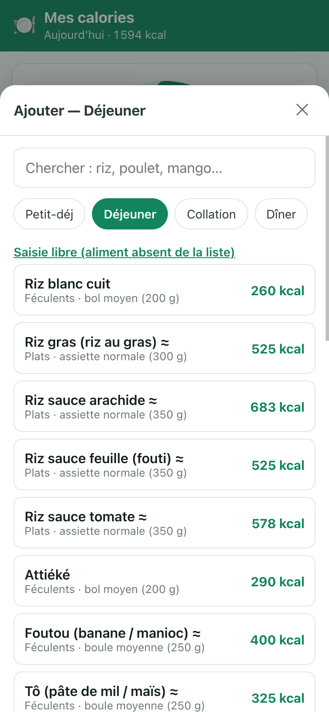
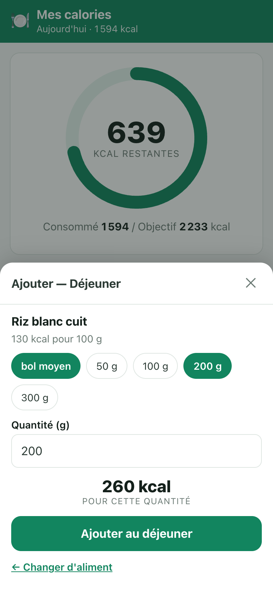
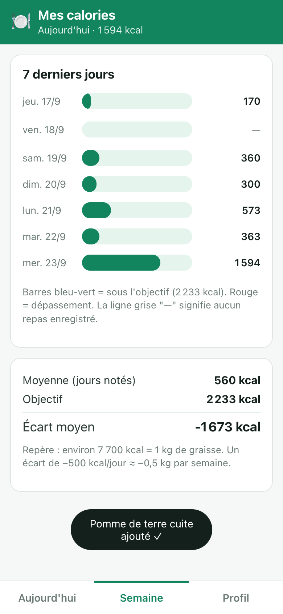
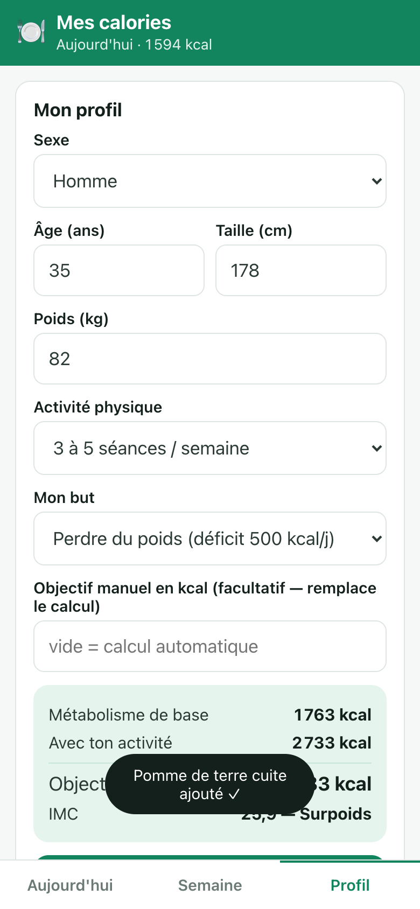

1. Ouvrir l'appli
Dans le dossier compteur-calories :
- Double-clic sur
lancer.command→ le navigateur s'ouvre sur l'appli. (Si macOS demande une confirmation, autorise l'ouverture.) - Ou bien : double-clic sur
app/index.html.
Sur l'iPhone, il faut une adresse web (localhost ne fonctionne pas à distance).
Demande-moi de la publier (GitHub Pages ou tunnel) pour t'en servir depuis le téléphone.
2. Écran « Aujourd'hui »

- Le grand chiffre = kcal qu'il te reste pour la journée. S'il devient rouge, tu as dépassé.
- ← Hier / Suivant → : naviguer d'un jour à l'autre (pratique pour rattraper un repas oublié).
- 4 repas : petit-déjeuner, déjeuner, collation, dîner — chacun avec son sous-total.
- ✕ à droite d'une ligne : supprime la ligne (utile en cas de faute de saisie).
3. Ajouter un aliment
Bouton + Ajouter dans le repas concerné → une feuille s'ouvre par le bas.


- Chercher l'aliment, le toucher.
- Choisir la quantité (ou taper les grammes).
- Ajouter au déjeuner (le nom du repas s'adapte).
Aliment absent de la liste ? Lien « Saisie libre » : nom + kcal pour 100 g + quantité. Coche « Garder cet aliment dans mes favoris » : il sera proposé la prochaine fois.
Les chips en haut de la feuille (Petit-déj / Déjeuner / Collation / Dîner) permettent de
changer de repas sans fermer la feuille.
4. Écran « Semaine »

- Barre verte = sous l'objectif, rouge = dépassement.
- Moyenne = moyenne des jours réellement notés (les jours vides ne comptent pas).
- Écart moyen négatif = tu es en dessous de ton objectif. Repère : ≈ 7 700 kcal = 1 kg.
5. Écran « Profil »

- Objectif manuel : si tu as un objectif donné par un médecin ou un diététicien, saisis-le ici — il remplace le calcul.
- Exporter (JSON) : enregistre une sauvegarde de tes données (fichier à garder).
- Importer : restaure une sauvegarde.
- Tout effacer : remet l'appli à zéro (définitif).
6. Questions fréquentes
| Question | Réponse |
|---|---|
| Mes données partent-elles sur Internet ? | Non. Tout reste dans ton navigateur. Aucun compte, aucun serveur, aucun envoi. |
| Je ferme le navigateur, est-ce que je perds tout ? | Non, les repas sont conservés sur l'appareil. Mais si tu vides les données du navigateur, elles disparaissent → exporte le JSON de temps en temps. |
| Les valeurs sont-elles exactes ? | Non, elles sont indicatives. La cuisson, l'huile et la taille réelle de la portion changent beaucoup le résultat. Les plats composés locaux (marqués ≈) sont des estimations grossières : ajuste-les avec tes propres repas. |
| Pourquoi « Objectif 2 000 kcal » au premier lancement ? | Valeur passe-partout tant que le profil n'est pas rempli. Renseigne ton profil pour un objectif calculé pour toi. |
| Est-ce un outil médical ? | Non. Pour un suivi (diabète, grossesse, sport de haut niveau), demande un avis médical ou diététique. |
7. Ce que l'appli ne fait pas (encore)
- Pas de protéines / glucides / lipides (uniquement les calories).
- Pas de scan de code-barres ni de photo.
- Pas de synchronisation entre appareils ni de compte partagé.
- L'objectif est le même pour tous les jours (pas d'historique des changements d'objectif).
Dis-moi ce qui te manque à l'usage : ces manques sont la liste des prochaines
versions (et c'est ce qui décidera si l'idée mérite d'aller plus loin).